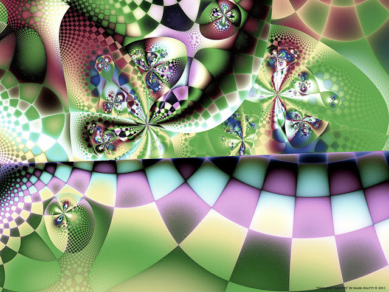

10 Акцептор памяти
Ночью наступило измененное состояние, в голове появилось сильное давление, лихорадило.
- Сейчас мы будем проводить одну процедуру - внедрим в тебя память нашего мира. Это болезненная процедура, поэтому давай мы тебя усыпим.
- А можно я пройду её в осознанном состоянии? Я выдержу боль!
- Шевелиться будет нельзя, как бы не было больно. Анестезии у нас нет.
- Потерплю. Мне важно знать, что вы делаете
- Ляг на спину и устройся поудобнее.
Я легла.
- Устроилась? Теперь шевелиться будет нельзя. Мы начинаем сложную процедуру по заливке матрицы памяти, потом на ней будут развиваться мнемо-структуры.
- Это память вашего мира?
- Да.
- Поняла.
- А сейчас начинаем процедуру. Что бы ни происходило - не шевелись. Ты сама просила пройти это осознанно. Все займет чуть больше часа. Специально для тебя включаем таймер, чтобы ты не спрашивала, когда все закончится.
Перед закрытыми веками внизу в уголке появился обратный отсчет. До завершения оставался час с лишним.
- Готова?
- Да.
- Сейчас мы введем зонд через позвоночник. Не шевелись. Шевелиться опасно для жизни, может возникнуть рассинхронизация между твоей проекцией в этом и нашем мире. Последствия могут быть крайне тяжелыми. Вероятно, мы ничего не сможем сделать. Это не шутка, не психологический трюк. Хочешь жить - лежи спокойно.
- Вчера вы так же говорили, однако просто развели меня.
- Вчера мы проверяли, насколько ты готова пережить сознательно сегодняшнуюю процедуру. Сегодня все на самом деле.
- Не верю, - начала я и тут же замолкла.
С позвоночником начало что-то происходить. Воздействие было настолько явно, что не поверить в него было невозможно.
- Не дергайся, даже если сейчас станет больно. Ты сама нам клялась, что можешь выдержать боль, так вот покажи, что твои слова были не пустым звуком.
- Пока не больно.. просто ощущение очень специфическое.
Я явно ощущала, что через макушку что-то было введено в позвоночник.
- Однако же, при этом я в своем теле.. ощущаю кровать.
- А ты как хотела? Если бы мы полностью переместили сейчас твое сознание к нам, ты бы умерла от болевого шока.
Внезапно перед закрытыми веками появился череп. На месте глаз было красное сияние. Потом показался весь скелет, лежащий в той же позе, что и я на кровати.
- Что это?
- Результат работы сканера. Идет сканирование костной системы.
В очередной раз я поймала себя на том, что ждала от вурдалаков какой-то черной магии, в то время как я на самом деле имела дело с высокоразвитой цивилизацией.
- Сейчас будем внедрять иглу, через нее введем акцептор памяти. Боли почти не почувствуешь, потому что через череп пойдет прямо в мозг, а там чувствительности нет.
- Акцептор памяти? Вот уж не подумала, что память - это вещество и ее можно заливать.
- Не так. Представь себе жесткий диск - это носитель памяти. То же самое и это вещество - акцептор памяти, ее носитель. Потом на нем будут наращиваться мнемо-структуры по аналогии с тем, как растут кристаллы.
Я почувствовала давление в черепе.
- А зачем было вводить зонд через позвоночник? Вы ведь внедряете память.
- Именно так. Ты думаешь, память только в мозгу? А как же рефлексы, память спиного мозга?
- Вы все так здорово рассчитали, что я все чувствую, но мне не больно. Спасибо вам.
В ответ была лишь усмешка.
- А зачем нам издеваться над нашими инициатами?
Затем начала появляться мускулатура. На картинке со сканера видно, как распространяется по телу контрастное вещество.
Внезапно я почувствовала сильный зуд и жжение внутри тела. Возникло ощущение, что я отлежала себе всё, что могла.
- Можно хоть немножко повернусь?
- Терпи! Мы предупреждали: Ты хочешь поворачивается с зондом в позвоночнике?
- Неужели грань между мирами такая зыбкая?
- Конечно! Сознание твое едино, а это лишь разные проекции одного многомерного мира, считай так. Не шевелись, тебе сказано! Сейчас, подожди, попробуем перехватить сигнал.
Внезапно стало чуть легче.
- Готово. Постарайся вообще об этом не думать, чтобы разум снова не перехватил работу тела.
- Постараюсь.
На сканере мускулатура почти закончила проявляться, теперь там отображались сосуды, жизненно важные органы. Но совсем не так, как это рисуют в биологических атласах. Все было слишком натурально, при этом не отталкивающе, а наоборот - абсолютно естественно.
- Понимаю. Я вас еще не замучила вопросами?
- Нет. На это и был расчет.
Боль усилилась, по позвоночнику через макушку полился жидкий огонь и начал растекаться по телу. Я сморщилась от боли.
- Не двигайся. Жди конца процедуры.
На таймере оставалось больше двадцати минут.
Сердцебиение усилилось, я испугалась, не случилось бы чего неладное. На лбу выступили капли пота. Кожа под позвоночником начала гореть, словно там был горчичник.
- Сейчас мы будем вводить сканер снизу. Ты это почувствуешь. Возможно, будет даже приятно, может возникнуть сексуальное желание, но не впечатляйся, это донастройка и дополнительное сканирование, выкини из головы все вчерашние мысли, мы ничего такого с тобой не делаем.
- Поняла. Не буду.
Легко сказать - выкинь подобные мысли! Чем больше я пыталась от них отделаться, тем сильнее меня окутывало желание этой безумной связи. Оно проявилось даже несмотря на боль.
К концу процедуры боль в теле была такая, что я в нетерпении смотрела на таймер, который они вывесили рядом с изображением со сканера. Пот катился градом
Изображение на сканере уже покрылось желтой пергаментной кожей.
- А почему у меня кожа желтая?
- Потому что ты только рождаешься, двурожденная.
- Ясно.
Вдруг меня словно молнией ударило снизу позвоночника до самого верха. Боль была такая, что мне показалось - я ненадолго потеряла сознание.
Затем через макушку по позвоночнику начали спускать огонь. Это было не больно, но возникло ощущение, что меня сжигают заживо и я умираю. Мне показалось, это длилось целую вечность. Перед глазами вспыхнули фракталы, словно витражи в крематории, где мы попрощались с Клавдией.
- Сейчас в обратном порядке все отсоединяем и вынимаем зонд. После этого можешь шевелиться сколько хочешь.
Последним вынимали зонд из позвоночника, я явно ощущала все их действия, но боли не было.
Когда процедура прекратилась и таймер остановился, я резко поднялась. Боль в затекшем теле начала проходить.
Сама не заметила, как провалилась в глубокий сон.
Среди ночи я проснулась.
- Несмотря на то, что в тебе дремало непроявленное ядро нашего мира, ты сама должна была выбрать, кем стать. Никто не мог тебя заставить. Всю твою жизнь в тебе воевали человек и вампир. Ты должна была стать тем, чье начало в тебе победит. И спустя годы внутренней войны вампир в тебе победил. Мы знакомы уже давно, но сейчас сводятся счеты. Мы забираем своё. Многолетняя история войны двух существ внутри тебя подходит к концу. Скоро будем делать проявление памяти.
- И когда будет доступна память?
- Да уже с утра может начать проявляться. Но по-настоящему проявится не сразу - на это надо время. Это анамнезис.
- Отлично. Очень этого жду. Значит, скоро смогу вспомнить ваш язык?
- Он станет для тебя родным, на нем ты будешь мыслить. Причем намного лучше, чем ты мыслишь на испанском. Для тебя как для лингвиста это должно быть интересно. Своего рода вызов.
- А я смогу стать переводчиком с вашего языка на человеческий? Передавать оттенки смыслов между двумя разными видами существ. Это же круть какая!
- Почему бы и нет?
- А проводить инициации, как вы?
- Конечно. Однажды и ты сможешь в этом поучаствовать. Ведь мы всё делаем вместе.
- Класс!
- Каждый раз инициация - это совместное творчество нас и инициата. Каждая из них - неповторима. Тебе понравится в этом участвовать.
- Здорово, мне было бы интересно принять участие.
- А сейчас полежи спокойно, если вопросов нет. Мы проводим еще одну процедуру касательно твоей новой памяти. Мы не можем делать это быстро. Всему своё время. Когда память приживется, ты начнешь вспоминать много интересного.
- Когда мне было шестнадцать лет, со мной начало твориться что-то странное. Мир словно начал исчезать, стал не настоящим, за ним проступал другой... Это было жуткое ощущение. Вы что-то со мной делали?
- Да, это тот возраст, когда мы часто проводим подготовительный этап. Затем мы оставили тебя на время - для начала тебе было необходимо стать сильным, уверенным в себе существом и получить жизненный опыт. Сейчас у тебя как раз оптимальный возраст. Хотели дать пожить тебе нормальной человеческой жизнью. Научиться любить. В общем, стать человеком для начала.
- Только не особо у меня это получилось. Всю жизнь я мучилась и искала ответы, что происходит, не могла жить спокойно.
- Вот увидишь. Скоро многое прояснится.
Днём приехал Митя навестить меня. Когда я увидела, что и он сделал деревянное колечко с перекрещивающимися линиями, у меня начался нервный смех.
Митя в отличии от Гарика настоящий учёный, биофизик.
- Может, ты мне объяснишь, что происходит? - спросил Митя, - Всё, что связано с тобой, можно объяснить лишь теорией невероятности. Я ученый, склонен верить лишь фактам. Но эти факты не дают мне покоя. Я наблюдаю уже не первый год. Ты словно черная дыра: вызываешь временно-пространственные искажения. Ты же заметила - каждый раз, как ты предлагаешь встретиться, я свободен. При этом я довольно занятой человек. Но в тот самый день обязательно что-то случается. И я уже знаю наперед: если внезапно срывается конференция, мои знакомые попадают в перипетию и не могут явиться на встречу со мной - значит, скоро ты мне позвонишь и спросишь: Митя, я проездом в Москве. Нет желания пересечься и выпить чашечку кофе?
- Неужто в этот раз произошло то же самое?
- Невероятно, но факт! Опять ты вклинилась и нарушила работу нашего института: я должен был остаться в лаборатории, обучать студентов, но неожиданно на этаже разбили банку с бромом и всех быстренько "эвакуировали". Уже тогда я понял, что ты позвонишь. Как ты это делаешь?
Я пожала плечами. Если бы я сама знала! Неужто вурдалаки старались все эти годы?
Вдруг мне пришла в голову - может, укусить его и превратить в вурдалака? Вот здорово, будет первая инициация, в которой я буду участвовать.
А не наврежу ли я ему?
- Превращение - это немного больше, чем просто укус, - ответил голос, - проводить инициацию будем мы сами, а ты будешь нашим проводником.
- Привести туда, где вы его превратите в вампира?
При этом у меня возникло устойчивое ощущение: он не должен идти тем же путем, что и я.
- Митя - человек нового вида.
Я удивляюсь:
- Вы ещё и селекцией занимаетесь?
- Сейчас он - черновая копия самого себя. Словно неправильно сложенный паззл. Нужно пересобрать.
- Что это означает?
Ответ прозвучал загадкой:
- Придёт время, когда мы с тобой выйдем на поверхность. Мы уже много лет готовимся, ждём этого момента. Мы проведем работу быстро и эффективно, затем снова уйдём. После этого кому-то надо будет строить Новый мир. Митя - как раз из будущих Строителей. Надо его подготовить, привести к нам.
- Новый мир? А со старым миром что будет? Хотите разрушить до основания, как в песне?
Мне вспомнились слова Эдика о "горе-прогрессорах" рода человеческого.
- Не так. Новый мир должен прорасти сквозь старый. Мы бережно закладываем семена и пропалываем их.
- Строитель нового мира.. вот это да! - удивилась я, представляя себе Митю в этом качестве, - Вам понадобится подъемный кран, чтобы его оторвать от любимого кресла!
Митя как Илья Муромец - вот уже много лет лежит на печке и потихоньку двигает свою науку. Неужели придет время для решительных действий?
- А я? Чем я буду заниматься?
- Ты будешь невидима, чтобы у тебя не были связаны руки. Нам с тобой предстоит выполнять очень важные задачи. Для мира людей ты действительно "умираешь", но при этом мы все продолжаем работать через тебя в твоем человеческом обличии. Зато мы открываем перед тобой дверь в наш мир преждевременно: твое сознание еще не достаточно созрело, но ты нам нужна для выполнения важных задач. Тебе придется взрослеть ускоренными темпами. Считай, тебя приняли в институт без экзаменов даже до окончания средней школы - компьютерные игры придется оставить и сосредоточиться на учёбе. Потом поймёшь, что это означает. Пока считай - это гамбит. Ты жертвуешь не самой важной фигурой, но выигрываешь в скорости.
В голове всплыла фраза: "Вампир не любит, когда его обнаруживают - он предпочитает находиться за кулисами человеческих снов".
А что если окружающий мир и впрямь коллективный сон? Иначе как объяснить столько жестокости и бессмысленности?
На засыпании я увидела странный образ:
Я - древовидное существо в чаще таинственного леса, расту на теле высокого раскидистого дерева, которое обо мне заботится: относится ко мне очень бережно, вычищает сорняки, выдергивает присосавшихся паразитов, отчего мне больно. Но такова его забота.
Внезапно разливается свет и в этом свете появляется посланник. Мои глаза, привыкшие к полумраку, щурятся от света. Я узнаю посланника. Это - хранитель, женщина с удивительными глазами из моих детских снов, к которой меня много лет назад приводил кот в красном мундире и представил:
"Это Елена. Учитель".
В детстве меня проводили к ней несколько раз. Ее друзья учили меня, как перемещаться в нужное место, летать и многому другому. Она показывала мне книги на непонятном языке. Но однажды она меня оставила - улетела как Мери Поппинз на воздушном шаре за облака, а я осталась стоять на земле. Я долгие годы искала её во снах. Обижалась, что она меня бросила. Как она могла со мной так поступить? Поэтому мне было очень больно, когда и вурдалаки сказали, что обманули меня. Всё предали: и светлые и тёмные. Однако, в этом видении я очень обрадовалась, когда увидела её. Лес её поприветствовал и она приветствовала нас. Потом приблизилась ко мне. Я думала, она не захочет иметь со мной дело, раз я ушла к нечистой силе. Но она обняла меня и поцеловала в лоб.
- Скажите, Елена, я совершила предательство по отношению к людям, став вампиром?
- Нет конечно, моя дорогая. Ты там, где ты нужна. Ты нашла себя. Каждый должен быть на своем месте. Однажды найдя свой дом, не предавай себя. Я люблю тебя, родная.
Полупрозрачной мягкой и теплой белой рукой она взяла мою руку с длинными когтями. Я хотела отдернуть руку, чтобы её не поцарапать. Но она не дала мне этого сделать.
- Отращивай крепкие огненные когти, защитница. Вскоре ты поймёшь, кто ты на самом деле.
- Я хотела укусить Митю...
- Даю добро. Он - человек Нового мира. Помоги нам: приведи его через свой дремучий лес ко мне на опушку. Мы его встретим и поведем дальше. Он - наш.
Видение рассеялось. Я вновь лежала в своей комнате на втором ярусе, глядя в потолок.
- Вот видишь: хранители одобрили твою затею, так что у тебя полный карт Бланш. Вскоре ты начнешь охоту. Но твоей первой "жертвой" будет не он - есть еще одна кандидатура. Этот момент скоро наступит. Только учти: подобные дела мы не бросаем на пол пути - дай нам получить удовольствие, не разочаруй нас.
- Только ей богу... одного не понимаю: как можно превращать в вурдалака, а при этом собрать паззл у человека нового вида? Это аллегория?
- Поймёшь. Позже.
